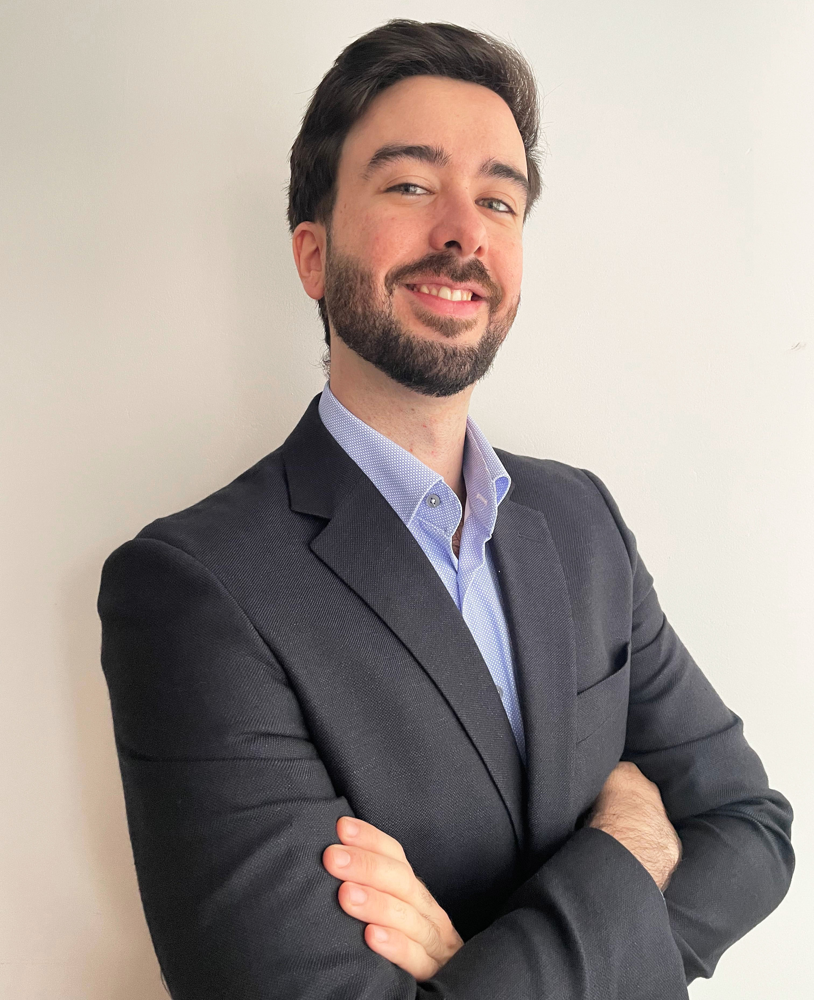

Miguel Encinas | Ph.D. in Chem. Eng.

Hi, I’m Miguel
🎯If you want to know more about me, this is the rigth place! I am 29, and I am a **Ph.D. in Chemical Engineering** by the University of Zaragoza, with more than **5 years** of experience in the academic research.
🔬The main goal of my Ph.D. thesis was the development of strategies that could **face tumoral growth**, using nanomaterials with catalytic activities to this end. We also deepened in the study of their **specific delivery to the tumoral mass**.
📊Due to this, I currently possess a **wide knowledge** of the biological principles, diagnosis and treatment strategies of **oncological processes**. At this moment, I am also learning and training my skills in **Python and SQL for Data Analysis** with relevant certifications and applying the obtained knowledge to practical situations.
🗣️During this stage, I also obtainted a wide variety of **technical and soft skills:** high **interpersonal** and social capacities, **commitment** and dedication, analytical **thinking**, fast **learning**, problem **solving**, public **speaking**, generation of **scientific evidence** and **management** of several projects in parallel. Now I am seeking to **transfer** all the acquired abilities to the industry.
[CV](https://drive.google.com/file/d/1gEr8gfl3fGFKSIKgV14XsOcg2A77NulZ/view?usp=sharing) 📑 | [LinkedIn](https://www.linkedin.com/in/miguel-encinas-gimenez/) 💼 | [Gmail](mailto:miguelencinas24@gmail.com) 📫 | [GitHub](https://github.com/therealmike10?tab=overview&from=2026-01-01&to=2026-01-23) 🐱 | [Google Scholar](https://scholar.google.es/citations?user=wkeOJE4AAAAJ&hl=en) 🎓
Technical & Professional Skills
.svg.png)


⭐ **9 scientific articles** (Q1 journals)
⭐ **International collaborations** | 2 articles
⭐ **Results presentation** | 5+ years
⭐ **Generation of scientific insights** | 5+ years
⭐ **Scientific congresses** | 4 participations
⭐**IBM Data Science Professional Certificate**
## Relevant Projects
### Inorganic NPs for cancer treatment
**Generation of scientific insights**
Study of the biological effects of Cu- and Fe-based nanoparticles as **antitumoral therapy**, which led to the **publication** of several scientific articles in **Q1 journals**.
This collaborative work led me to strengthen several skills that are useful in a **translational role**, like working in an **interdisciplinary team**, generating **scientific evidence** and solving problems **based on evidence**.
[Project Summary](Project%20Summary%202fee3ad3657880248f5cf829fa72ea63.md)
### Conference in scientific congress
**Public speaking | Results presentation**
Presentation (**English spoken**) of the **main results** generated up to that point in my doctoral thesis to an **expert, multidisciplinary audience**.
**Congress**: Nanomaterials Applied to Life Science, 2022 (Santander, Cantabria).


### Scientific review
**Synthesizing scientific information**
**Writing, design and formatting** of a scientific review about the principal interactions of **nanoparticles** with **nucleic acids**. This required understanding, synthesizing and restructuring a large amount of information drawn from multiple scientific articles.
[Project summary](Project%20summary%202fee3ad36578804f8206e0622c89342f.md)

## Hobbies & Interests
### 🏀 Playing basketball
After **20+ years** playing this sport, basketball has provided me with many qualities that I still carry with me today, such as **teamwork**, **leadership**, **discipline**, **dedication**, **resilience** and passion for sports. These qualities led my to win **2 individual prizes**, also leading my team to be **champions of the league**.
I also obtained the **Certification of Basketball Trainer (Level I)**, spending 1 year as **Assistant Trainer** in the sports club where I played, learning the **management of a team** leading our team to the **league victory**.
### 👟 Practicing other sports
During the last years, I had the opportunity to practice and enjoy different sports and activities, such as **padel** and **mountain hiking**, still practicing them occasionally.
In addition, I also enjoy **running** regularly, with the current objective of improving my running time in **5K races,** following a training planning.
### 📚 Reading
Reading books has always been one of my favorite activities, serving as a space for **relaxation** and **reflection**. My preferences have changed over the years, reading either **novels** or **essays**, yet there are some genres that I particularly enjoy the most, such as epic fantasy and personal development. I am also a huge fan of comics, *manga* and graphic novels.
### ✈️Travelling
I have always thought that visiting other cities or countries, and **experiencing other cultures** is a really enriching experience. Also, I am the kind of person that enjoys **planning trips,** having organized trips to many places in Spain, as well as to different countries such as **France**, **Germany**, **Austria** and **EEUU**.
During my **Erasmus+ programme**, I also travelled to a wide variety of different places in **Italy**, **diving into** and enjoying the **culture** of that country.
Thanks for taking the time to visit my portfolio!